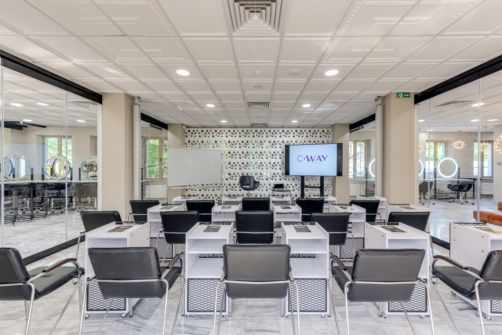
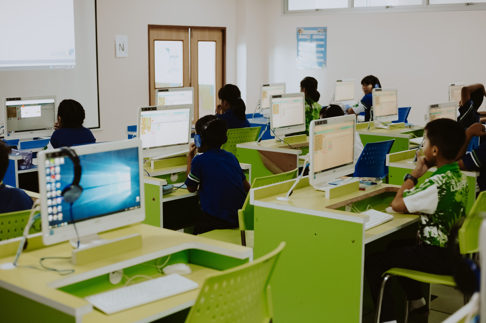

Founded in 2009 with an uncompromising commitment to small-batch academic coaching, mastery of first principles, and empathetic mentorship for every student.
Our Founding Story
Born from a Simple Belief: Every Mind Deserves Real Attention
In the autumn of 2009, two university educators—frustrated by the sprawling 45-student commercial tutoring halls where timid students slipped behind and struggling minds were reduced to test-taking automatons—decided to start something different. They rented a quiet two-room study space above a community bookstore in Cambridge, Massachusetts, and welcomed their very first cohort: five local high school juniors struggling with AP Calculus and Physics.
Rather than drilling rote formulas, they applied the Socratic dialogue method: breaking down complex theorems into intuitive mental models, encouraging students to question assumptions, and identifying cognitive stumbling blocks before assigning practice problems. Within six months, all five students achieved top distinction scores of 5 on their AP examinations and developed an enduring fascination with STEM disciplines.
Word traveled rapidly among parents, schools, and academic advisors. Over the next fifteen years, that modest 5-student study room organically grew into BrightPath Academy—a premier institution that has empowered more than 8,000 scholars across Grade 6 through 12. Yet despite our institutional growth, our core charter has remained inviolable: we never compromise our strict 12-student classroom ceiling, and we never prioritize speed over deep conceptual mastery.
Dr. Arthur Sterling & Dr. Rebecca Vance
Co-Founders & Academic Directors, BrightPath Academy

Institutional Track Record2009 – Present
15+
Years of Excellence
Continuous academic operation
8,000+
Scholars Mentored
Grade 6 through 12 graduates
98.4%
Distinction Rate
Board honors & AP 4/5 scores
1:12
Strict Ratio Cap
Maximum seats per classroom
Academic Quality Guarantee
Every BrightPath Academy student receives personalized diagnostic gap tracking, weekly parent progress briefings, and free 1-on-1 remediation whenever a conceptual milestone drops below 85%.
Our Evolutionary Journey
Fifteen Years of Academic Milestones
From an intimate living-room study circle to a nationally accredited tutoring center, explore the key milestones that shaped our academy.
September 2009
Founded in Cambridge, Massachusetts
BrightPath Academy opens its doors in a modest two-room center with two founding tutors and exactly 5 high school students. The founding principle was established: a permanent cap of 12 students per batch to safeguard personalized academic dialogue.
June 2012
First 100% Board & AP Distinction Cohort
The entire graduating class of 140 enrolled Grade 10 and Grade 12 students achieved straight A distinctions in state AP exams, with 94% earning scores of 5 on Advanced Placement Physics, Calculus, and Chemistry exams.
January 2015
Launch of BrightPath Academy Digital Learning Portal
BrightPath Academy expanded into hybrid instruction by deploying a proprietary online homework and learning system. Students gained 24/7 access to curated problem banks, recorded concept derivations, and asynchronous mentor query channels.
November 2018
5,000th Student Milestone & Campus Expansion
BrightPath Academy proudly celebrated its 5,000th enrolled student. The academy inaugurated a brand-new multi-disciplinary campus equipped with hands-on physics and chemistry demonstration stations and a 3,500-volume reference library.
March 2021
AI-Powered Concept Gap Diagnostics Engine
BrightPath Academy engineered its automated diagnostic testing engine. Rather than simply grading answers right or wrong, the platform deconstructs student errors to pinpoint root prerequisite misconceptions within 15 minutes of assessment.
Present Day — 2024
8,000+ Alumni & National Tutoring Excellence Recognition
Crossing the 8,000-alumni landmark with 45+ distinguished full-time faculty members. Recognized as the #1 Rated School Tutoring Academy by the Regional Academic Accreditation Council while maintaining our strict 1:12 classroom ratio.
Core Institutional Identity
Guided by Mission, Inspired by Vision
Our core philosophy anchors every single lesson, syllabus redesign, diagnostic review, and mentor interaction at BrightPath Academy.
Our Driving Mission
Democratizing Academic Mastery Through Rigorous Mentorship
To provide middle and high school students with an empowering, small-batch learning haven where abstract concepts are made crystal clear, curiosity is celebrated, and individual intellectual confidence is nurtured through first-principles pedagogy and continuous diagnostic feedback.
Four Pillars of Our Mission:
Radical Personalization: Never allowing any student's individual questions or pace to be obscured by a crowd.
Conceptual First Principles: Replacing rote formula memorization with intuitive mathematical and scientific proofs.
Continuous Diagnostic Loop: Detecting and eliminating learning gaps weeks before high-stakes term exams.
Compassionate Mentorship: Instilling self-discipline, resilience, and emotional poise in the face of academic setbacks.
Our Long-Term Vision
Shaping the Next Generation of World-Class Problem Solvers
To pioneer an international standard of secondary academic mentorship where scholastic anxiety is permanently replaced with intellectual joy, cultivating 50,000+ fearless thinkers by 2030 who possess the conceptual depth, analytical dexterity, and moral clarity to lead global innovations in science, engineering, and civic society.
Vision Goals Towards 2030:
Zero Rote Memorization: Championing educational standards across districts that evaluate genuine analytical fluency over test regurgitation.
Intelligent Learning Infrastructure: Expanding hybrid adaptive problem sets that give every student custom-tailored challenge progressions.
Universal Fellowship Access: Sponsoring 500+ full scholarships annually for underrepresented STEM minds through our Foundation.
Lifelong Scholarly Independence: Ensuring graduates leave our halls equipped to thrive in top-tier research universities without external tutoring.
Pedagogical Core
The 12-Student Ceiling: Why Cohort Size Dictates Mastery
Cognitive science proves that learning decays rapidly in oversized classrooms. Here is how our strictly enforced 1:12 batch ceiling transforms student performance.
100% Verbal Participation
In a lecture of 40 students, only 3 extroverted students talk while 37 remain passive. In a batch of 12, every single student answers questions, explains problem logic out loud, and articulates theorems during every 90-minute session.
Real-Time Cognitive Tracking
Our faculty observe pencil strokes, pauses, and facial hesitation as students work through practice derivations. Misunderstandings are corrected instantaneously—preventing faulty algebraic habits from solidifying.
Collaborative Peer Synergy
Twelve peers share similar academic goals, fostering spirited mathematical debate and healthy collaborative problem-solving. Students learn from each other's alternate solutions in an environment of mutual respect.
Bi-Weekly 1-on-1 Office Hours
Every enrolled student in a 12-person batch is allocated a mandatory 30-minute individual office hour every two weeks with their lead mentor to review tricky homework sets, calibrate exam pace, and review personal targets.
BrightPath Academy Small-Batch Model (1:12)
Personalized diagnostic pace, 100% verbal accountability, weekly personalized homework reviews, and direct mentor contact info for immediate questions.
Conventional Mega-Coaching (1:45+)
Passive one-way lectures, silent rear rows, generic standardized tests with zero feedback, and impersonal staff where students are just account numbers.
State-of-the-Art Learning Spaces
Campus Facilities Designed for Deep Focus
We created an environment specifically tailored for high school STEM concentration, collaborative inquiry, and distraction-free academic excellence.
Smart Classrooms
Features 86-inch 4K interactive multi-touch displays, dual-camera hybrid streaming setups, acoustic dampening panels for crystal-clear audio, and ergonomic Herman Miller adjustable chairs designed for comfort during multi-hour problem workshops.

Advanced Science Lab
A fully certified demonstration laboratory with calibrated vernier sensors, air tracks for physics kinematics, digital microscopes, and organic chemistry titration units. Students see textbook formulas validated through real empirical experiments.
Digital Computer Lab
Twenty-four high-performance dual-display workstations configured with Desmos graphing calculators, GeoGebra 3D geometry suites, Python numerical tools, and simulated CBT test interfaces matching the digital SAT, ACT, and AP testing conditions.
Academic Reference Library
A quiet research sanctuary housing over 3,500 specialized textbooks, 20-year past examination archives, Olympiad problem archives, and individual noise-attenuated cubicles with high-speed academic database terminals for self-directed study.
Faculty Rigor
Our 5-Step Faculty Selection Standard
Only 3.2% of educator applicants pass our exhaustive evaluation pipeline. We do not recruit casual tutors; we select and train elite academic mentors.
01Phase 1
Application & Pedigree Review
Candidates must hold a minimum Master's degree or PhD in their discipline from an accredited research institution, with verified top-5% graduation honors and documented teaching experience.
02Phase 2
Subject Mastery Benchmark
A rigorous 3-hour blind examination covering AP, Olympiad, and undergraduate collegiate problems. A minimum score of 98% is strictly mandatory to advance to the teaching round.
03Phase 3
Live Socratic Demo Teaching
A 45-minute live teaching audition delivered before our senior pedagogical board and a live student panel. Scored on conceptual clarity, patience, empathy, and active questioning.
04Phase 4
Background & Licensure Check
Triple-layer background verification, state educator certification authentication, academic transcript audit, and exhaustive professional reference evaluations from prior department heads.
05Phase 5
BrightPath Academy Mentorship Residency
Sixty intensive hours of proprietary training in micro-diagnostic gap analytics, adolescent cognitive motivation, and small-group Socratic management before leading their first official batch.
Institutional Honors
Academic Certifications & Recognition
Our commitment to pedagogical excellence and transparent student outcomes has been honored by leading educational bodies and quality standards organizations.
National Accreditation
Tutoring Excellence Award 2024
Awarded by the National Academic Coaching Association for achieving the highest sustained 5-year AP 4/5 distinction rate across registered tutoring academies in the Northeast.
Regional Science Board
STEM Coaching Leadership Award
Conferred by the Regional Science & Mathematics Olympiad Committee for mentoring 42 regional Olympiad finalists and 16 international medalists over the past six seasons.
EdTech Leadership Summit
Best Diagnostic Innovation
Recognized at the Global Learning Forum for our proprietary 15-minute concept gap assessment model that isolates specific prerequisite deficiencies and personalizes study paths.
Global Quality Standard
ISO 9001:2015 Quality Certified
Certified educational quality management system ensuring strict compliance with syllabus updates, verified faculty credentialing, student safety, and data confidentiality standards.
Verified Parent Feedback
Voices of Real Academic Transformation
Read genuine testimonials from parents whose children turned scholastic apprehension into top college admissions through BrightPath Academy.
“When our daughter entered Grade 11, her confidence in AP Physics and Calculus was completely shattered. BrightPath Academy's 12-student batch was an absolute revelation. Her mentor didn't just teach steps—she taught her how to think like a physicist. Sophia scored 5 on both AP exams and secured early admission to Johns Hopkins.”
“Commercial coaching centers pack 45 kids into a lecture hall where asking a question is intimidating. At BrightPath Academy, my son Leo had nowhere to hide—and that was the best thing for him. His tutor immediately identified his factoring gaps, and within two terms his algebra grade went from a C+ to straight A's.”
“The parent portal at BrightPath Academy provides unparalleled clarity. After every bi-weekly diagnostic, we receive a granular report showing exactly which sub-skills need reinforcement. The bi-weekly 1-on-1 sessions kept Maya motivated. Her SAT score climbed by 340 points and she is now thriving in Engineering.”
Complimentary Academic Evaluation
Experience Our Teaching Methodology — Book a Free Demo Class
See firsthand how our small-batch dynamic, socratic questioning, and expert faculty make challenging concepts click in under 60 minutes. Zero obligation. 100% focused on your student's unique academic ambitions.
Subscribe to our bi-weekly newsletter for curated exam strategy breakdowns, Olympiad calendars, and college prep resources authored by our senior faculty.